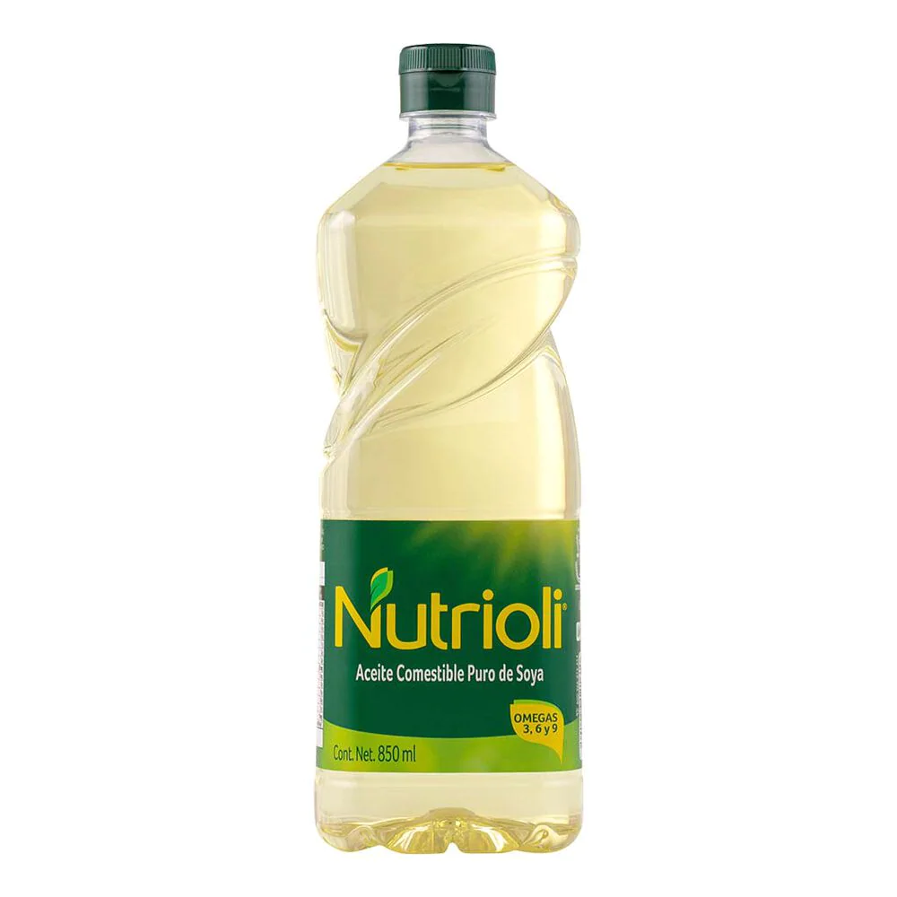
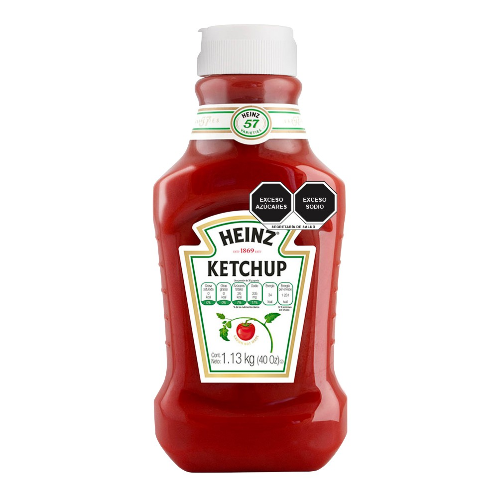
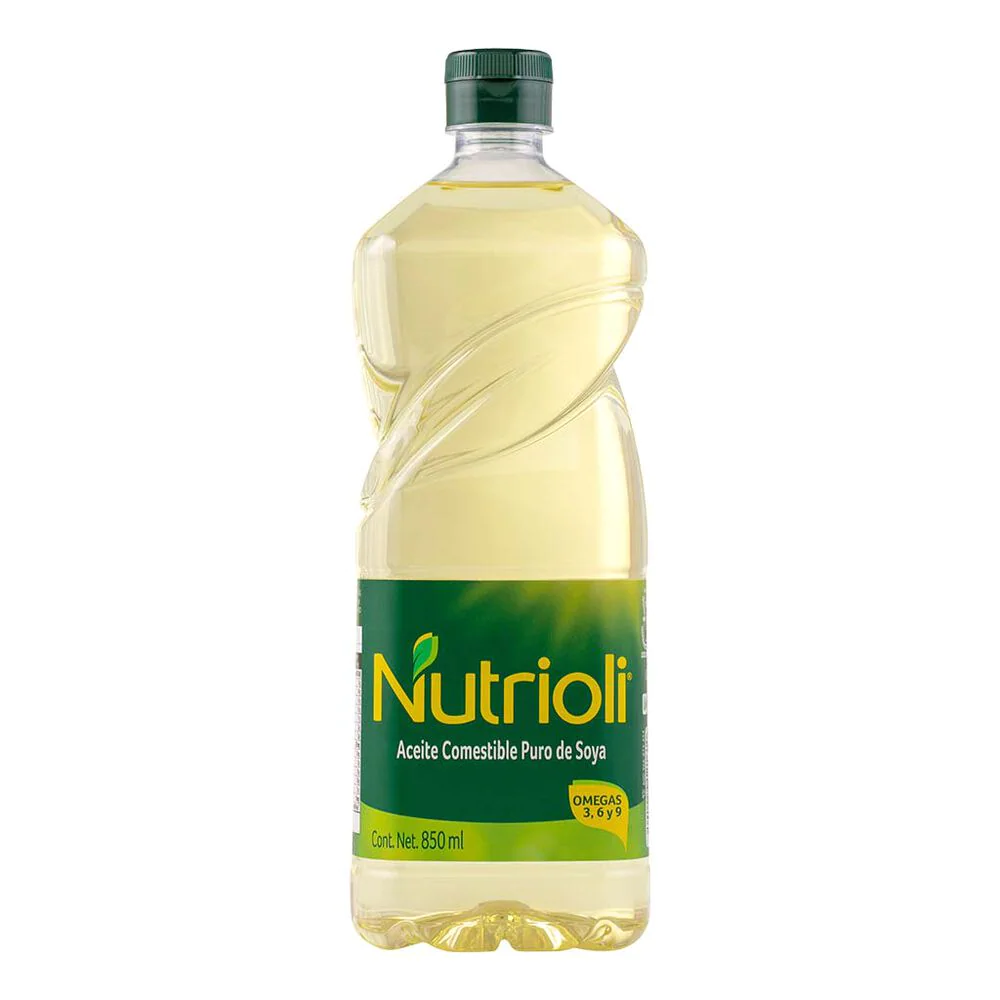
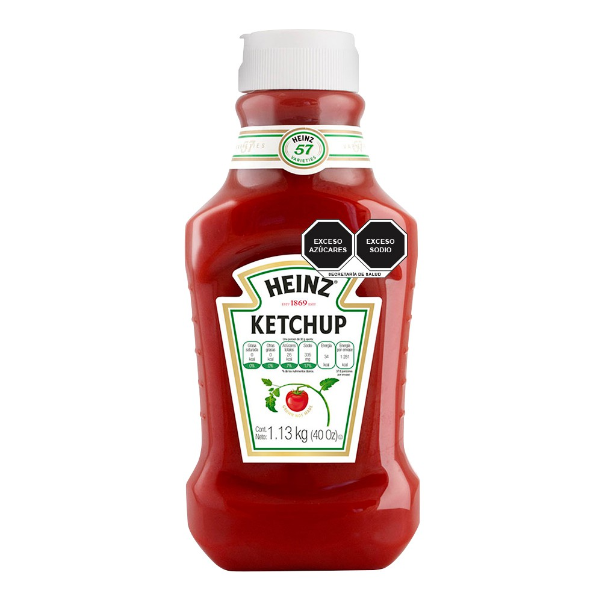

¡A continuacion la mejor receta para preparar papas fritas!
Ingredientes
-
1kg de papas
-
Sal
-
Aceite
-
Catsup

 



Pasos a seguir
-
Lavas las papas
-
Pelas las papas
-
Cortas las papas
-
Pones en un sarten a calentar aceite
-
Pones las papas cortadas a freir
-
Sacas las papas y pones a escurrir el excedente de aceite
-
Pones las papas en un plato y les agregas catsup
-
DISFRUTA LAS MEJORES PAPAS DEL MUNDO


A continuacion te dejo un video del procedimiento completo